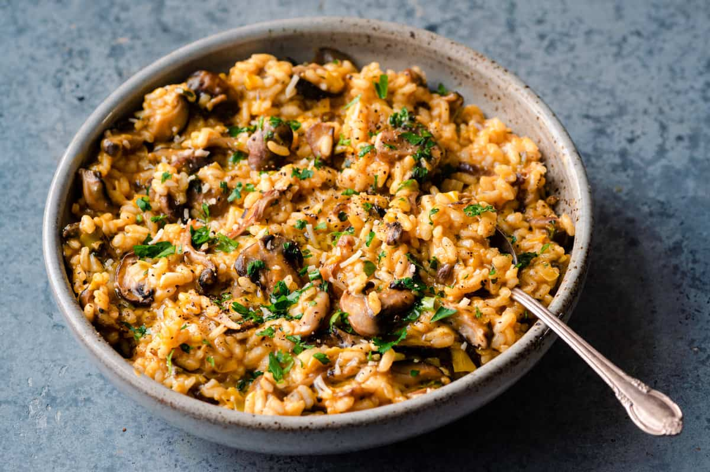

Vegan Risotto

Description
This is a delicious and simple recipe to make a sumptious and filling vegan risotto.
Ingredients
- 1 tbsp olive oil
- 1 onion, finely chopped
- bulb fennel, finely chopped
- 1 courgette, halved lengthways and thinly sliced
- 3 cloves garlic, finely chopped
- tsp fennel seeds, lightly crushed
- 200g risotto rice
- a small glass vegan white wine (optional)
- 800ml vegetable stock, hot
- 200g frozen peas
- 2 tbsp nutritional yeast
Step
- Heat the olive oil in a large, deep frying pan, add the onion,
fennel and courgette, and fry for 10 minutes until softened, adding
a splash of water if it starts to catch. Add the garlic and fennel seeds,
and cook for 2 minutes, then add the rice and stir until every grain is lightly
coated in oil. Pour in the wine, if using, and bubble away until reduced by half.
- Keep the vegetable stock in a pan over a very low heat to keep warm. Add a ladleful
at a time to the risotto, only adding more once the last spoonful has been completely absorbed,
stirring all the time. Once the rice is cooked but still has a little bite, add the frozen peas
and cook for another few minutes until just cooked. Stir in the nutritional yeast, lemon zest
and juice, and some seasoning, divide between shallow bowls and top with the parsley.